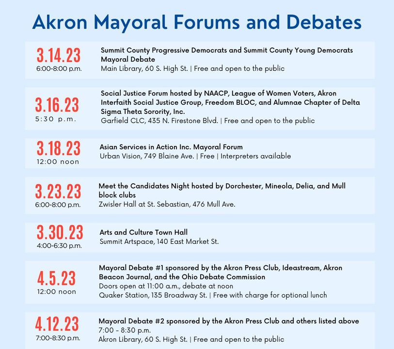

Timeline photos
My Rankings For Akron Mayor After The Second Debate
First: Tara Mosely
Second: Marco Sommerville
Third: Mark Greer
Fourth: Shammas Malik
Fifth: Joshua Schaffer
Sixth: Jeff Wilhite
Seventh: Keith Mills
My rankings have definitely changed since the last debate.
Tara and Marco are still in the top 2 spots.
But Mark Greer is just amazing. He's a younger Black man who really gets it.
At one point the question was: How do we keep people in Akron? Mark's answer: TREAT THEM BETTER.
He is so right about that. The best people in our community often get treated like crap by the administration. Number 1 on that list right now is Imokhai Okolo. He was the only young Black man to potentially be on the Police Oversight Board (a group that has zero power to do anything to police). He was uniformly blocked by 5 old white men.
I'd seriously think about leaving Akron if I was him. He undoubtedly feels hated and not respected for all his successes. (He's an attorney in Cleveland for Jones Day.). If I were him I'd be thinking about getting one of those swank downtown lofts in Cleveland.
I talked to another Black man yesterday that is very high in power. He said that he feels like the administration makes it their life mission to personally destroy you if you disagree with them. I feel that sentiment based on my experiences trying to come up with new ways to shelter homeless people.
The administration says they want to grow the population. But then they publicly seek to crush you if you step out of line. Who wants to live in a city like that?
Joshua Schaffer also went up in my list. He listed all of his educational background. It's really impressive. He doesn't list his resume on his website. But I wish he would. I didn't catch everything in my notes. But I'm tell you: this guy is highly educated in political science.
Shammas Malik continues to slide down for me. During the question about Fresh Ideas he said "slow, consistent work. That's what you'll get from me." That has got to be the most boring fresh idea I've ever heard in my life.
Shammas opened up talking about his mom. He closed talking about his mom. He sounds like a guy pretending to be a politician. He's just not good at it. He is a good speaker. But the ideas he has behind the words are weak. He wants to be the politician with experience yet he hasn't finished one full term in city council. He feels like a guy with a Harvard Law degree that thinks he's better than this low level grunt work and just needs to ascend as fast as possible.
He talks about respecting people and then calls us out during city council if he doesn't like the words we use. (He was done for me after the way he treated Reverend Ray Greene.) For a person that talks about how important respect is: he sure doesn't seem to respect many of the people and their legitimate feelings of being oppressed and squashed by a ruthless administration.
Jeff Wilhite has a pretty interesting background. He has done some really interesting things. But the long and short of it is: we don't need another mainstream white guy running Akron right now. The Black community needs a serious voice at the table.
I believe it's incredibly important and relevant that we have a Black mayor at this time in Akron. And we have really good choices to pick from. They truly are the best choices from the list.
I still like Tara the most. She is down in it. She's been on city council for 9 years. She knows how the system works. She's calm. She works well with all kinds of people. And she gets it. She knows the systemic problems we are facing in Akron. I just truly believe she would be great for this job. Being a Black Woman is also a big plus.
Marco Sommerville has a ton of experience. He was president of city council. He was the planning director. He's the deputy mayor right now. He's a businessman. He knows the neighborhoods. But he's got that "old man" feel about him. I'd say he's not fresh and exciting like Tara and Mark Greer. But what I like maybe most about him is his team. He has a really energetic young team helping his campaign. I LOVE them. It's great that he's got a core group of young people that are excited about him. You just never know what a person is going to be like in a position like mayor. He might cave to all the money and special interests. Or he might be brave enough to bring in exciting, fresh faces into his cabinet. We just don't know.
Mark Greer is amazing. He has this Malcom X look about him. He's incredibly thoughtful, incredibly exciting. If he became mayor I would feel like we had definitely turned the page in Akron. I'd feel the same way about Tara. With Marco I'm not sure if we are turning the page or just going to the next paragraph of the same idea.